Elberadweg von Büchen nach Dresden
Vorbereitung
Dieses Jahr wollen wir uns mal den Elberadweg näher ansehen.
Unser Sohn hat jetzt auch zwei Radtaschen und unsere Tochter wird wieder mit
dem FollowMe hinter meinem Rad hergezogen, so dass wir 8 Radtaschen zur
Verfügung haben.
Wir entscheiden uns dieses Jahr, auch den Trangia Kocher plus Zubehör und
Lebensmittel mitzunehmen, weil wir nicht wissen, wie gut die Versorgungslage am
Elberadweg ist. Ein wenig Werkzeug und für jede Reifengröße
ein Ersatzschlauch kommen auch mit. Ansonsten fahren wir wie letztes Jahr mit
unserem Bergans Tipi als Unterkunft, dessen Boden wir aus Platzgründen
wieder zuhause lassen.
Für den Streckenverlauf haben wir uns den Elberadwegführer von
Bikeline besorgt und den herunterladbaren GPS Track ins Smartphone kopiert. So
lässt sich mit der App LocusPro wunderbar offline navigieren. Offline ist
auch besser, denn auf weiten Strecken hat man mit einer O2 SIM kein Netz, ab
und zu mal Edge (also auch kein Netz) und nur in den Städten 4G. Der
Radweg ist aber auch gut beschildert. Campingplätze haben wir spontan mit
camping.info oder Google Maps gesucht und auch immer etwas für eine Nacht
gefunden.
Das Smartphone wurde tagsüber mit einer Solarzelle geladen, und eine
kleine Powerbank war auch mit an Bord. Positiv zu bemerken ist, dass auf
vielen Campingplätzen das Nachladen kein Problem war und sogar in einige
Restaurants bieten mittlerweile Steckdosen.
Zuerst haben wir geplant, wieder direkt in Kiel zu starten, ein örtlicher
Radhändler empfahl uns Lübeck als Startort, denn von dort könne
man den Elbe-Lübeck-Kanal fahren. Ein weiterer Tipp war
Büchen, da es dort einen kostenpflichtigen Park and Ride Parkplatz direkt
am Bahnhof gibt und wir auf dem Rückweg per Bahn eh durch Büchen
kommen. Wir entschieden uns für Büchen, da es von dort am
Elbe-Lübeck Kanal direkt flach los geht und wir eine Tagesetappe einsparen.
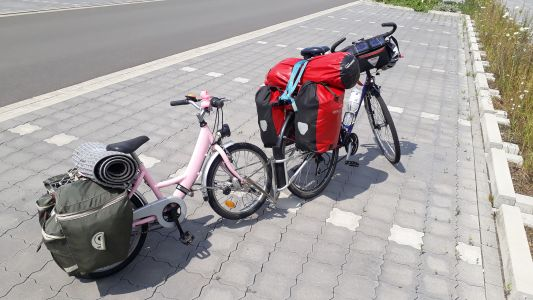
Vater-Tochter-Gespann.
13.07.2019 - 32km - Büchen - Lauenburg - Radegast
Beste Pizza
Um 9 Uhr sind wir mit dem vollgeladenen Auto nach Büchen gefahren und
haben uns auf dem Park and Ride Platz für 20 Euro ein Monatsparkticket
gezogen.
Die Bahnfahrt hätte mit den Rädern bei 74 Euro gelegen. Im Nachhinein
hätten wir aber auch von Kiel den Nord-Ostsee-Kanal bis Brunsbüttel
und dann die Elbe hoch bis Hamburg radeln können. Das hätte unsere
Fahrt um zwei Tage bis 3 Tage verlängert.
Der Elbe-Lübeck-Kanal ist schnell gefunden und wir genießen den
Kanalradweg. Der Genuß hört kurz vor Lauenburg auf, denn der Radweg
wird zu einem taschentuchschmalen Streifen.
Wir schauen uns Lauenburg an. Sehr sehenswert. Unser Vorschlag, dort ein Eis zu
essen, wird von den Kindern schnell in eine Pizza umgewandelt, denn die erste
Eisdiele ist eher eine Pizzeria. Laut unserem Sohn die beste Pizza Hawaii auf
der gesamten Tour.
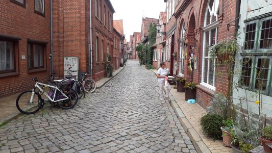
Lauenburgs malerische Altstadt.
In Lauenburg fahren wir über die Brücke auf die Südseite der
Elbe, wo wir am Camping Elbeling in Radegast unser Zelt aufbauen. Der
Campingplatz hat einen Pool, was den Kindern gut gefällt, und ein
Restaurant, was uns allen gut gefällt. Der Kocher bleibt also noch in der
Radtasche. Der Campingplatzbesitzer mit niederländischen Wurzeln ist sehr
nett und gibt uns auch viele Tipps für den weiteren Weg.
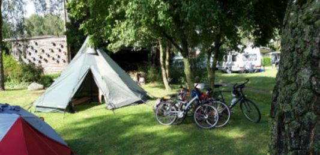
Auf dem ersten Campingplatz.
14.07.2019 - 73km - Radegast - Hitzacker - Gartow
Schützenfest beim Frühstück
Vom Campingplatz fahren wir nach Bleckede, um bei einem Bäcker zu
frühstücken. Direkt vor der Bäckerei bereiten sich die
Schützen vor, so dass wir durch den Umzug noch etwas Unterhaltung haben.
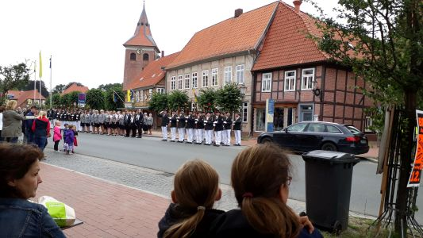
Schützenfest in Bleckede.
In Bleckede nehmen wir die Fähre von den niedersächsischen zur
brandenburgischen Elbseite. Dort soll der Radweg schöner und ebener sein.
Das ist er auch. Wir kommen an ehemaligen Grenzanlagen vorbei, und es wird
einem die historische Bedeutung der Elbe als Grenzfluß nahe gebracht.
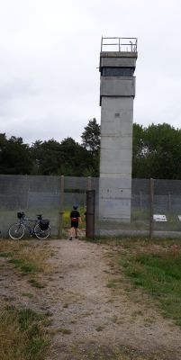
Ehemaliger Wachturm und Grenzzaun.
In Hitzacker wechseln wir wieder nach Niedersachsen, und kehren dort zum
Mittagessen ein. Dabei ergoogeln wir unseren nächsten Campingplatz.
Wir müssen bis Gartow. Aus Zeitgründen beschliessen wir, die
Landstraße durch Dannenberg und Gorleben zu nehmen und nicht den
Elberadweg. Wir erreichen den Campingpark Gartow, der direkt neben der
Wendland Therme Gartow liegt, welche noch 2 Stunden geöffnet hat. Wir
verzichten auf die Duschmarken und nutzen den vergünstigten Eintritt
für Campinggäste in die Therme.
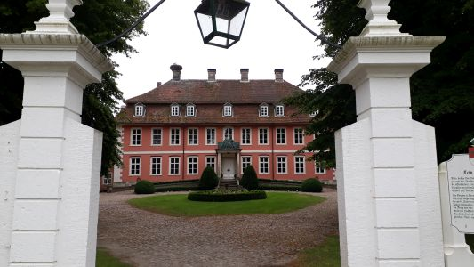
Schloß Gartow.
Danach gestaltet sich die Suche nach einen Restaurant etwas schwierig. Im
ersten Laden werden wir 30 Minuten ignoriert, aber bei den Gartower Seeterassen
bekommen wir noch etwas.
15.07.2019 - 75km - Gartow - Wittenberge - Havelberg
Das schönste Stück
Wir brechen früh auf und nehmen die Fähre in Schnackenburg, um wieder
auf die brandenburgische Elbseite zu kommen. Gottseidank ist die Fähre in
Betrieb, denn wir haben ziemliches Niedrigwasser und einige Fähren
verkehren bereits nicht mehr.
Wir fahren durch Cumlosen, und sind mittags in Wittenberge. Nach kurzer
Stadtbesichtigung geht es an der Elbe weiter durch kleine Dörfer in das
UNESCO Biosphärenreservat Flusslandschaft Elbe-Brandenburg. Bei
Quizöbel überqueren wir die Havel und sind in Sachsen-Anhalt.
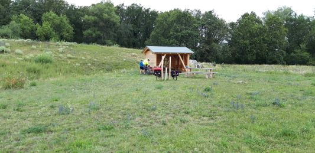
Im UNESCO Biosphärenreservat.
Wir fahren bis zur Campinginsel Havelberg. Dort spielen die Kinder Minigolf
und wir kochen uns unser Abendessen. Abends schauen wir uns den Ort an und
suchen schon mal einen Bäcker für den nächsten Morgen.
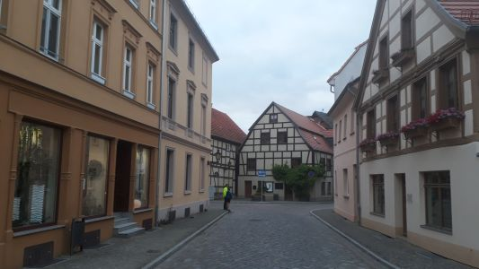
Havelberg.
Die heutige Etappe war im nachhinein das schönste Stück der Tour.
16.07.2019 - 60km - Havelberg - Tangermünde - Bittkau
Nervige Bundesstraße und schöner Campingplatz
Heute hab ich mich auf unserer Karte etwas vertan. Wir lassen die Elbe rechts
liegen und müssen daher bis Tangermünde auf einem Radweg neben einer
Bundesstraße fahren. Ein Teilstück von 2km sogar ohne Radweg, was
mit Kindern bei den vielen LKWs nicht angenehm ist.
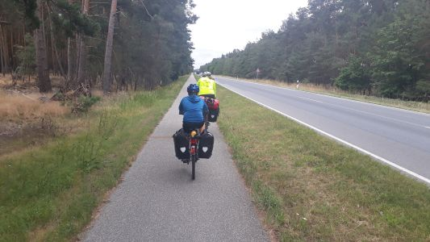
Nerviges Stück bis Tangermünde.
Vor Tangermünde wechseln wir die Elbseite auf einer unendlich
erscheinenden Brücke. Der Ortskern von Tangermünde entschädigt
aber für die Strapazen. In Tangermünde haben wir dann die
schlechteste Pizza der gesamten Tour.
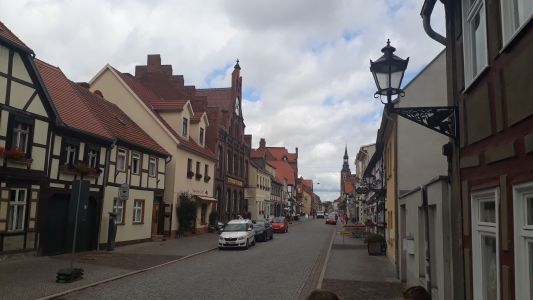
Tangermünde.
Ab Tangermünde ist der Radweg wieder nett, und wir schaffen es bis zum
Family Camp Kellerwiehl zwischen Grieben und Bittkau. Dort kochen wir wieder
selber und unterhalten uns noch ganz nett mit anderen Radlern. Überhaupt
trifft man die Radler, die in die gleiche Richtung fahren immer mal wieder.
Wir sind also gar nicht so langsam unterwegs.
17.07.2019 - 55km - Bittkau - Rogatz - Magdeburg
Erst warm, dann wird es heiß
Wir brechen früh auf. Das Wetter wird langsam wärmer. Die Sonnenblumen
freuen sich auch.
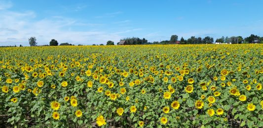
Sonnenblumenfeld.
In Rogatz nutzen wir die Fähre, um auf die andere Seite zu kommen.
Nach einiger Zeit erreichen wir das Wasserstraßenkreuz von Elbe und
Elbe-Havel-Kanal. Ein recht beeindruckendes Bauwerk.
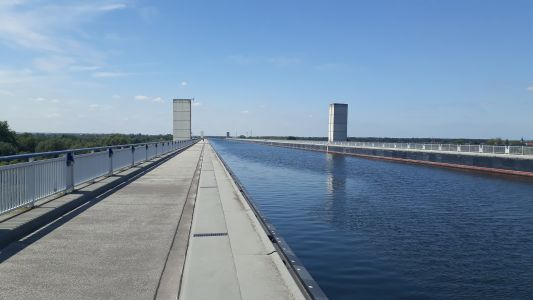
Das Wasserstraßenkreuz.
Wir planen einen Ruhetag in Magdeburg einzulegen. Daher suchen wir einen
Campingplatz für zwei Nächte. Wir finden den Campingplatz Strandbad in
Biederitz. Eher ein Club von Campingfreunden. Dafür auch der günstigste
Platz der gesamten Tour. 15€ für 2 Nächte mit 4 Personen.
18.07.2019 - 0km - Magdeburg
Ruhetag
Es ist weiterhin heiß, und wir fahren von Biederitz mit der Bahn in die
Stadt. Es tut auch mal ganz gut, nicht auf dem Sattel zu sitzen. Unser erster
Weg führt uns zu einem Arzt. Unser Sohn hat einen Insektenstich, der
etwas merkwürdig aussieht. Der Profi gibt aber Entwarnung. Es ist wohl
kein Zeckenbiß.
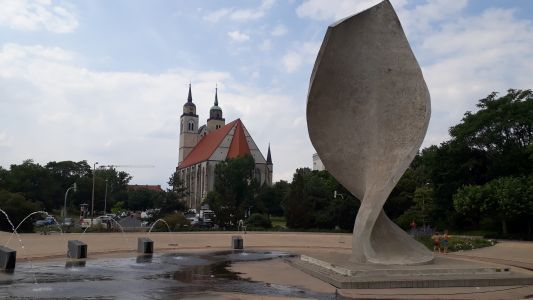
Fahnenmonument - Spirelli.
Also ist der Weg frei für Sightseeing. Hundertwasserhaus, Eisbecher,
Dom, Elbufer, mit den Kindern zu Mc Donalds, Anton von Guericke Denkmal, etc.
Wir sind wegen der Hitze trotzdem froh, wieder zurück auf dem Campingplatz
zu sein. Dort können wir uns in der Ehle abkühlen.
19.07.2019 - 75km - Magdeburg - Aken
Viele kleine Ortschaften
Wir verlassen Magdeburg und kommen auf unserem weiteren Weg nur noch durch
kleine Ortschaften. Randau, Grünewalde, Ranies, Pretzien, Dornburg,
Walternienburg, Steckby, Steutz bis zur Fähre Aken. Dort setzen wir
über.
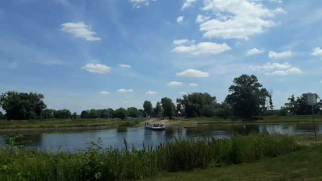
Fähre Aken.
Dort schlagen wir am Boot- und Campingcenter am Russendamm direkt an der
Elbe unser Zelt auf und begrüssen erst mal die Radfahrer, die wir von
den vergangenen Plätzen kennen.
Direkt an der Fähre gibt es ein Restaurant, welches wir dann abends
besuchen und die im Laufe des Tages verlorenen Elektrolyte auffüllen.
20.07.2019 - 59km - Aken - Dessau-Roßlau - Wittenberg
Stabhochsprung und Luther
Erst einmal füllen wir im Discounter unsere Lebensmittel und Getränke
für den Tag auf. Dann geht es Richtung Dessau-Roßlau. Im Forsthaus
Leiner Berg gibt es eine Bratwurst und ein Bier für die Erwachsenen. Das
Wetter ist super, die Strecke ist abwechslungsreicht, und so erreichen wir
zügig die Lutherstadt Wittenberg. Beinahe wäre ich an den 95 Thesen
vorbeigefahren, der eigentlichen Hauptattraktion der Stadt.
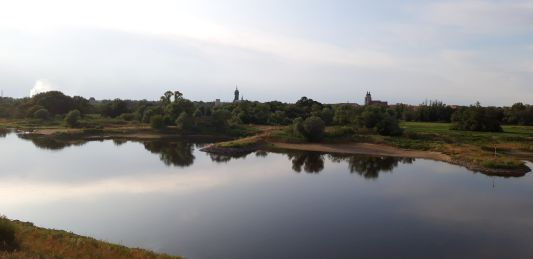
Die Elbe bei Wittenberg.
Wir finden einen Platz für unser Zelt auf dem Marina Camp Elbe.
Zum Abendessen fahren wir wieder zurück in die Stadt, in der ein
Stabhochsprungevent mit den Größen der Hochsprungszene stattfindet.
Die gesamte Stadt und das Umland scheinen auf den Beinen zu sein, und das
Wetter spielt bis kurz vor Ende des Events mit.
Zurück auf dem
Campingplatz bricht ein Unwetter über der Region ein, das Bäumen
und Zelten zum Verhängnis wird. Unser Zelt hält den Sturmböen
zum Glück stand. Ein herumfliegendes Zelt retten wir in den
Waschmaschinenraum, weil die Besitzer nicht auszumachen sind. Sie sind in
der Stadt vom Unwetter überrascht worden und erst gegen 1 Uhr nachts
zum Campingplatz gefahren. Dort haben sie ihr Zelt nicht gefunden und haben
sich eine feste Campinghütte gemietet. Sie sind trotz der höheren
Kosten froh ihr Zelt im Waschmaschinenraum heil abbauen zu können.
21.07.2019 - 72km - Lutherstadt Wittenberg - Wiesenbach - Schloss Pretzsch - Torgau
Trödel und Bundesstraße
Der Wind hat etwas nachgelassen aber auf unserem weiteren Weg nach Dresden
sehen wir noch die ein oder andere Auswirkung der letzten Nacht.
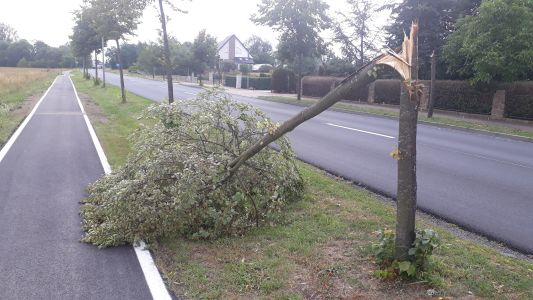
Ein Sturmschaden.
Der Restwind verhilft uns zunächst als Rückenwind zu einem
ordentlichen Tempo. Bis Wiesenbach. Dann dreht aber unsere Fahrrichtung
mit Überquerung der schwarzen Elster von Ost auf Süd und wir
bekommen Gegenwind. Mist.
Bei Pretsch nutzen wir wieder eine Fähre, um auf die andere Seite zu
kommen. Am Schloß findet ein Trödelmarkt statt, wir genehmigen
uns dort ein stärkendes Stück Torte und einen Kaffee.
Unser Tagesziel, der Campingplatz am grossen Teich in Torgau liegt noch
ein Stück entfernt und wir entscheiden uns nicht den Elberadweg, sondern die Bundesstraße 182 zu nehmen. Vielleicht gibt es ja
einen Radweg. Auf Sand gebaut. Es gibt keinen. Also Augen zu und durch.
Am Campingplatz ist niemand am Empfang. Wir bauen erst einmal das Zelt auf.
Der Platz hat Waschmaschinen und die wollen wir auch nutzen, um mal wieder
etwas saubere Wäsche zu haben. Gottseidank kommt bald jemand und wir
kriegen die Münzen für die Duschen und die Waschmaschine. Heiß
genug ist es auch, um die Sachen schnell trocken zu kriegen. Einen Pool
für die Kinder gibt es auch, so dass die schon mal beschäftigt sind.
Abends radeln wir nach Torgau, um uns die Stadt anzusehen und etwas zu
essen. Am Marktplatz gibt es mehrere Möglichkeiten dazu. Die erste
teilt uns mit, dass die Küche überfordert ist aber zweite
Restaurant hat die Logistik besser im Griff.
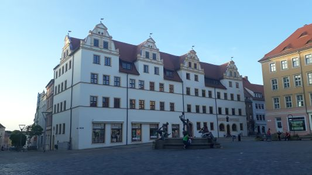
Markplatz von Torgau.
22.07.2019 - 62km - Torgau - Strehla - Riesa
Riesenspaghettieis in Riesa
Der Tag beginnt bereits heiß und wir starten erst einmal mit einem
Frühstück bei einem Bäcker in einen Supermarkt, wo wir auch
direkt unsere Wasservorräte auffrischen. In die Trinkflaschenhalter
passen die bekannten 1.5 Liter Flaschen. 2-3 Liter pro Person und Tag gehen
bei dem Wetter aber locker durch. Wobei durch stimmt nicht, denn unten kommt
nicht viel an.
Hinter Torgau hat der lokale Wasserversorger eine gute Idee. Eine
Selbstzapfanlage mit kaltem Wasser für die Radfahrer. Das haben wir
auch schon anders erlebt. Restaurants am Wegesrand die einen explizit
verbieten Wasserflaschen auf der Toilette aufzufüllen. Zweimal spülen
ist erlaubt aber kein Wasser am Waschbecken auffüllen. Das Trinkgeld
fällt dort natürlich sehr knapp aus.
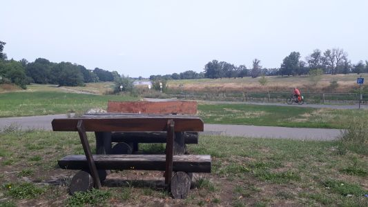
Elbradwegidylle.
Als wir in Riesa ankommen steht uns allen der Sinn nach einem großen
Eisbecher. Die erste Eisdiele wird auch direkt geentert und stellt sich als
hervorragend heraus.
Danach haben wir es nicht mehr weit. Viel Auswahl gibt es für die Nacht
nicht aber wir entscheiden uns für einen privaten Campingplatz am
nördlichen Elbufer. Campingfreunde Elbe - Ernst Haacke. Der Besitzer
ist schon etwas älter, sein Platz auch. Eigentlich wollte er auch schon
längst aufhören aber es kommen halt immer wieder Leute. Ein naher
Supermarkt stellt die Getränkeversorgung sicher und wir freunden uns
mit einem Zeltnachbarn an, der mit seinen zwei Kindern in einem Boot unterwegs
ist.
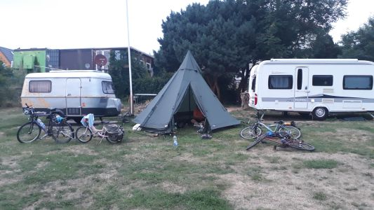
Campingplatz Elbe.
23.07.2019 - 51km - Riesa - Meißen - Dresden
Links abgebogen und rechts gelandet
Heute steht uns die letzte Etappe bevor und wir wollen Dresden erreichen und
dort 3 Nächte bleiben. Von unterwegs haben wir 2 Doppelzimmer im Ibis
Budget gebucht, welches sehr zentral liegt erstaunlich günstig ist.
Die heutige Etappe stellt optisch auch eine Art Belohnung dar. Das Elbtal wird
enger, die Felsen am Ufer werden beeindruckeneder.
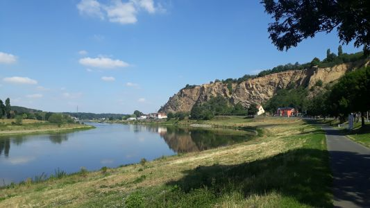
Super Radweg, tolle Aussicht.
In Meißen machen wir noch einmal Mittagspause bevor es dem Ende unserer
Radtour entgegen geht.
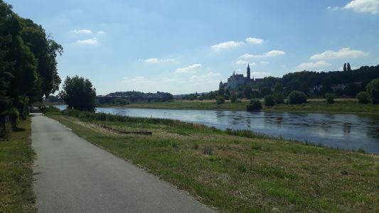
Kurz vor Meißen.
In Radebeul verfahren wir uns leider noch einmal.
Anstatt rechts ab auf dem Elberadweg zu bleiben biegen wir nach links und
kommen in der Radebeuler Innenstadt aus.
Hier scheint ein geistiges Zentrum
der AfD zu sein. Die ganze Stadt ist mit diesen schrecklichen Plaketen
gepflastert und eine Ortsgruppe der Schnullernazis hat einen Infostand
aufgebaut. Ein abschreckender Blick in eine Zukunft, die es zu verhindern gilt.
In Dresden brauchen wir ein wenig, um uns zurechtzufinden. Unser Hotel bietet den Service die Fahrräder drinnen abzustellen. Ansonsten sind die Zimmer einfach aber zweckmäßig gehalten.
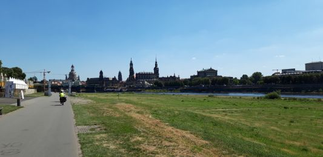
Wir erreichen Dresden.
24.07.2019 - 0km - Dresden
Sightseeing
Wir waren alle längere Zeit nicht mehr in Dresden. Von daher gibt es
viel neues zu sehen. Das Wetter ist heiß. Abends treffen wir uns noch
mit einer Freundin, die uns Tipps für den nächsten Tag gibt.
25.07.2019 - Elbsandsteingebirge
Wir fahren mit der Bahn ins Elbsandsteingebirge nach Rathen. Dort setzen wir
mit der Fähre über und wandern am Amselsee vorbei durch die
Schwedenlöcher hoch zur Bastei. Eine Touristenfalle, weil auch per PKW
erreichbar. Den Kindern gefällt es aber.
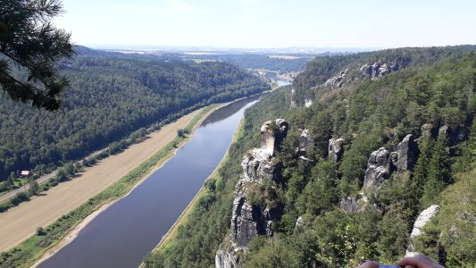
Blick von der Bastei.
Als Abstiegsroute wählen wir den Weg nach Wehlen. Dort nehmen wir
wieder eine Fähre und die Bahn bringt uns zurück nach Dresden.
In der dortigen Globetrotter Filiale kaufen wir noch ein und den Kindern
gefällt dort am Besten die Kletterwand. Hier sind die Temperaturen auch
einigermaßen erträglich.
26.07.2019 - 33km - Wir fahren nach Berlin
Wir verladen am Dresdener Hauptbahnhof unsere Räder und fahren nach
Berlin. Dort wollen wir noch ein paar Tage bei einer Freundin übernachten
und ihre Ortskenntnis nutzen. Als wir ankommen ist sie aber noch am arbeiten
und wir schauen uns das Tempelhofer Feld an. Eine tolle Oase in einer
Großstadt mit viel Freizeitpotential.
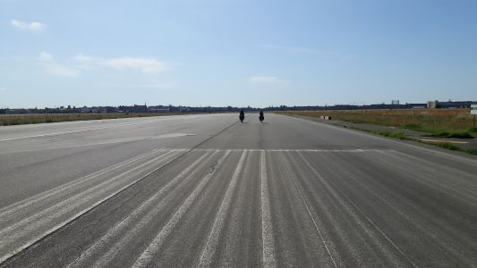
Auf dem Tempelhofer Rollfeld.
Abends radeln wir noch zum Abendessen zu einem Picknick zum Park am
Gleisdreieck.
27.07.2019 - 44km - Berlin am Christopher Street Day
Heute wollen wir uns die Stadt anschauen. Wir nutzen in den Tagen in Berlin
häufig den Radweg zwischen S-Bahn Priesterweg und dem Postdamer Platz.
Eine super Radrennstrecke direkt neben der Bahn und fast autofrei.
Wir schauen uns den Viktoriapark an inklusive Berlins einzigem Wasserfall,
das Kottbusser Tor, essen bei Goldies ein Blech Pommes, schauen uns die
Mauerreste an, landen am Alexanderplatz, die Hackeschen Höfe, den
Reichstag, auf dessen Kuppel man leider nicht mehr so einfach kommt, die
schwangere Auster, Schloß Bellevue, radeln um den großen Stern,
Tiergarten, Brandenburger Tor, das Denkmal für die ermordeten Juden,
Potsdamer Platz. Volles Programm also und wir müssen einige Umwege
radeln, denn die Karawane des Christopher Street Days wälzt sich
zeitgleich durch die Stadt.
Zurück in unserer Unterkunft sind wir dann auch reichlich geschafft.
28.07.2019 - 29km - Berlin - Zoologischer Garten
Heute radeln wir wieder an unserem bahnbegleitenden Radweg in die
Innenstadt. Wir wollen den Tag im Zoologischen Garten verbringen. Das Wetter
ist schön die Tiere gut gelaunt. Ein perfekter Tag. Abends schauen wir
uns noch die Gedätchniskirche und die Wasseruhr im Europacenter an.
29.07.2019 - 5km - Berlin - Büchen - Kiel
Wir radeln unseren altbekannten Radweg an Berlin Südkreuz vorbei zum
Berliner Hauptbahnhof. Ein unmöglicher Bahnhof. Es dauert ewig mit vier
Rädern in den kleinen Fahrstühlen unser Abfahrtsgleis zu erreichen.
Da hat sich mal so richtig jemand verplant.
Der Nahverkehrszug bringt uns erst nach Schwerin und dann fahren wir von
dort nach Büchen. Unser Auto steht noch dort, wie wir es verlassen
haben. Das Parkticket stecken wir an den Automaten. Das ist noch ein paar
Tage gültig und eventuell kann es noch jemand gebrauchen.
Die Räder sind schnell wieder auf dem Dach und das Gepäck im
Kofferraum. Anderthalb Stunden später sind wir wieder zu Hause.
Links:
Camping Elbeling
Campingpark Gartow
Campinginsel Havelberg
Family Camp Kellerwiehl
Campingplatz Strandbad
Boots- und Campingcenter am Russendamm Aken
Marina Camp Elbe in Wittenberg
Camping am großen Teich in Torgau
Ibis Budget Dresden
|